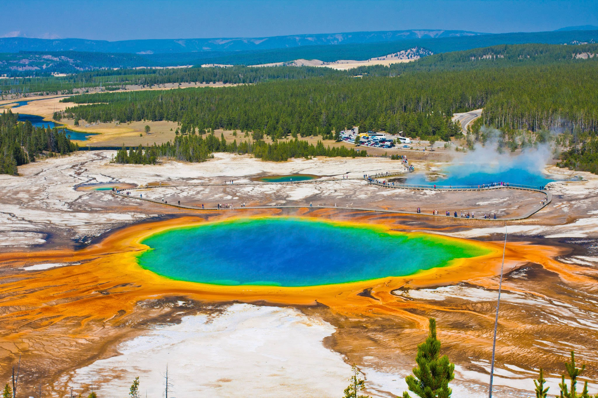
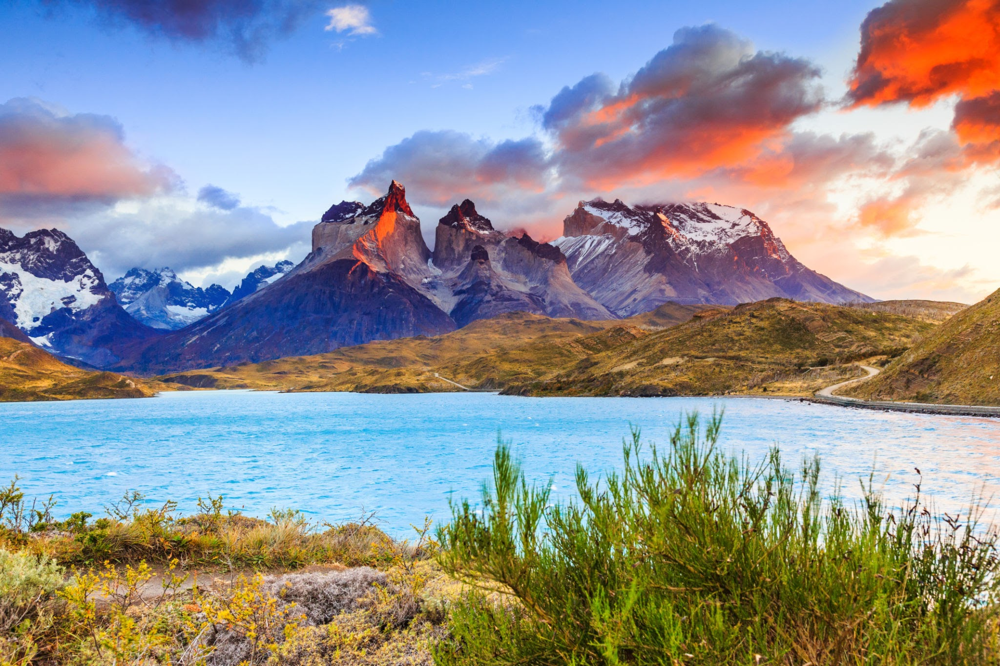
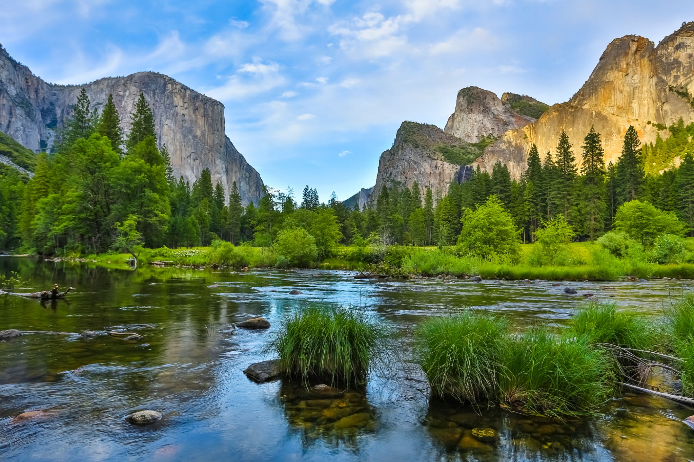

National Parks

Yellowstone
Yellowstone National Park is a nearly 3,500-sq.-mile wilderness recreation area atop a volcanic hot spot. Mostly in Wyoming, the park spreads into parts of Montana and Idaho too. Yellowstone features dramatic canyons, alpine rivers, lush forests, hot springs and gushing geysers, including its most famous, Old Faithful. It's also home to hundreds of animal species, including bears, wolves, bison, elk and antelope.

Kruger
Kruger National Park, in northeastern South Africa, is one of Africa’s largest game reserves. Its high density of wild animals includes the Big 5: lions, leopards, rhinos, elephants and buffalos. Hundreds of other mammals make their home here, as do diverse bird species such as vultures, eagles and storks. Mountains, bush plains and tropical forests are all part of the landscape.

Torres del Paine
Torres del Paine National Park, in Chile’s Patagonia region, is known for its soaring mountains, bright blue icebergs that cleave from glaciers and golden pampas (grasslands) that shelter rare wildlife such as llama-like guanacos. Some of its most iconic sites are the 3 granite towers from which the park takes its name and the horn-shaped peaks called Cuernos del Paine

Fiordland
Fiordland National Park is in the southwest of New Zealand’s South Island. It’s known for the glacier-carved fiords of Doubtful and Milford sounds. A beech forest trail on the sandy Milford shore offers views of towering Mitre Peak. Nearby, the craggy Earl Mountains are reflected in the glassy surface of Mirror Lakes. On the Cleddau River, the Chasm Walk passes over bridges with views of powerful waterfalls.

Yosemite
Yosemite National Park is in California’s Sierra Nevada mountains. It’s famed for its giant, ancient sequoia trees, and for Tunnel View, the iconic vista of towering Bridalveil Fall and the granite cliffs of El Capitan and Half Dome. In Yosemite Village are shops, restaurants, lodging, the Yosemite Museum and the Ansel Adams Gallery, with prints of the photographer’s renowned black-and-white landscapes of the area.

Jasper
Jasper National Park in the Canadian Rockies comprises a vast wilderness area of Alberta province defined by glaciers, lakes and peaks like 11,033-ft.-high Mt. Edith Cavell. The Icefields Parkway, a road from the town of Jasper, passes subalpine forest and the immense Columbia Icefield. Outdoor activities like hiking, camping and skiing are popular. Native wildlife includes elk, moose, bighorn sheep and bears.